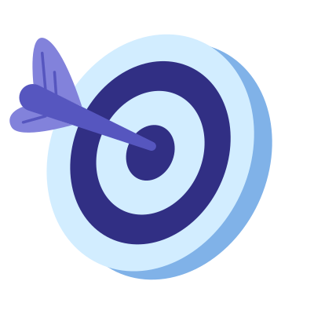
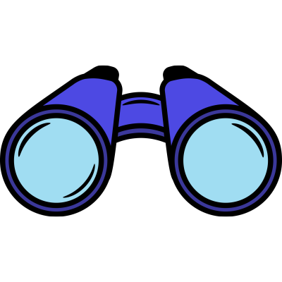
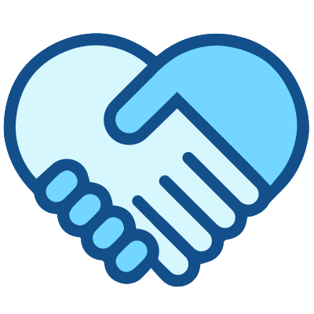
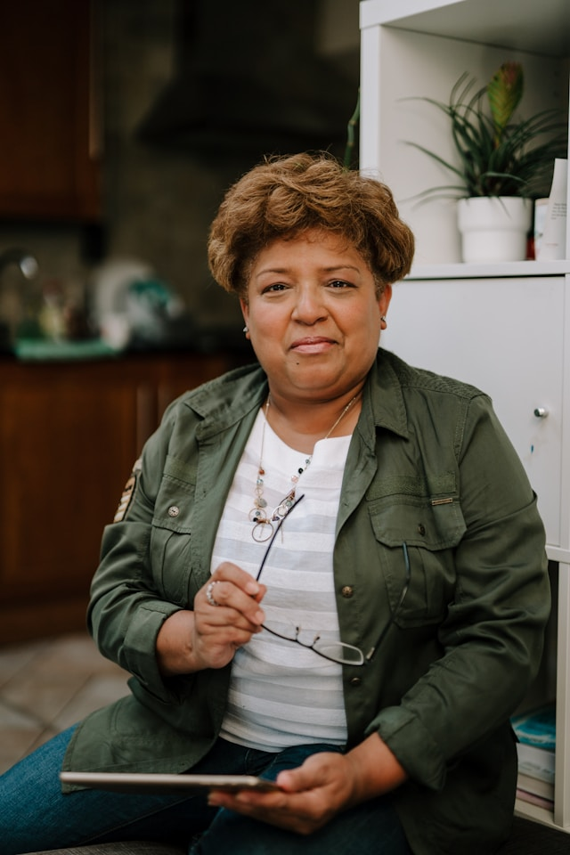
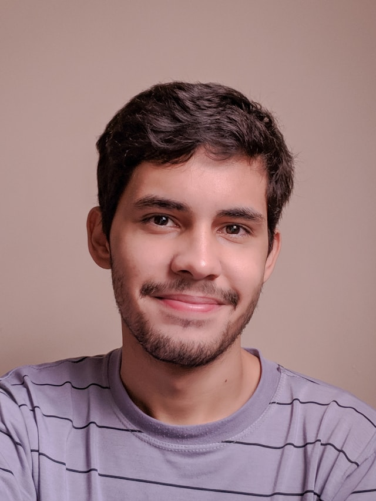

Sobre Nós
A Muda Mundo é uma organização não governamental (ONG) que acredita em uma verdade fundamental: TUDO ESTÁ CONECTADO. A saúde do planeta, o bem-estar dos animais e a felicidade das pessoas são fios da mesma teia. A Muda Mundo nasceu para fortalecer essa conexão.
Fundada em 2022, por biólogos, ativistas e educadores movidos por um propósito claro: não é possível cuidar das pessoas sem cuidar do lar que todos compartilhamos. Começamos com projetos de reflorestamento e, hoje, ampliamos nossa atuação para promover o equilíbrio completo do ecossistema.
Como fazemos a mudança acontecer?
- Educação Ambiental: Despertamos a consciência para um futuro sustentável.
- Apoio a Comunidades: Fortalecemos quem vive em harmonia com a terra.
- Proteção da Vida Selvagem: Resgatamos e cuidamos dos nossos animais.
- Práticas Sustentáveis: Incentivamos um modo de vida mais consciente.
Cada projeto é uma ponte que reconecta o ser humano ao seu ambiente, cultivando um futuro onde o avanço de um representa a evolução de todos. Acreditamos que cada gesto, por menor que seja, é uma semente de esperança.
Faça parte deste movimento. Junte-se a nós e vamos, juntos, mudar o mundo — um ato de harmonia de cada vez.
Muda Mundo
Conexões que criam vida.

MissãoReconectar a humanidade ao seu ecossistema, promovendo o equilíbrio e a harmonia entre todos os seres vivos através de ações de educação, proteção e sustentabilidade.

VisãoSer referência global em iniciativas que integrem saúde ambiental, bem-estar animal e qualidade de vida humana, inspirando ações sustentáveis.

Valores- Conexão: Tudo está interligado.
- Sustentabilidade: Práticas conscientes.
- Respeito: Pela vida em todas as suas formas.
- Colaboração: Juntos somos mais fortes.
- Inovação: Soluções criativas para desafios ambientais.
Nossa Jornada
Desde nossa fundação em 2022, a Muda Mundo tem trilhado um caminho de impacto positivo e transformação. Cada marco em nossa jornada reflete nosso compromisso inabalável com a causa ambiental e social. Aqui estão alguns dos momentos mais significativos que definiram quem somos hoje
2022
Fundação da Muda Mundo por um grupo de biólogos e ativistas apaixonados.
2023
Lançamento do primeiro projeto de reflorestamento e início das campanhas de educação ambiental.
2024
Expansão das atividades para incluir resgate de animais e apoio a comunidades locais.
2025
Parcerias estratégicas com outras ONGs e lançamento de programas de sustentabilidade.
Quem Faz Acontecer

Joana Silva
Diretora Geral
"Acredito que cada ato de empatia com a natureza é um passo para curar o mundo."

Carlos Souza
Diretor de Projetos
"Transformar ideias em ações concretas que beneficiam o planeta é a minha maior motivação."

Maria Oliveira
Gerente de Comunidades
"O futuro sustentável se constrói lado a lado com as comunidades que protegem nossas florestas."